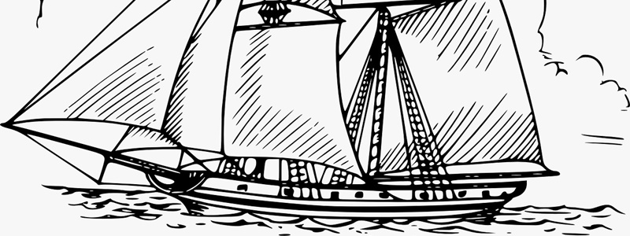

As Grandes Navegações foram o processo de exploração do Oceano Atlântico realizado pioneiramente por Portugal no século XV e acompanhado por outros países europeus ao longo do XVI. Levaram a uma série de “descobrimentos” por parte dos europeus e resultaram, por fim, na chegada europeia ao continente americano em 1500.
Descoberta da América e início do sistema colonial; Estabelecimento do comércio de escravos africanos; Criação de novas rotas comerciais; Expansão política e militar das nações europeias.
